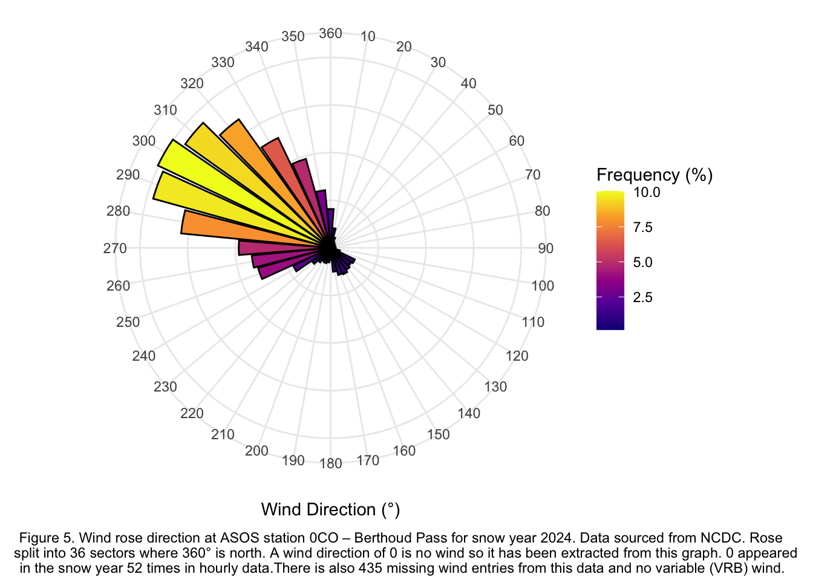
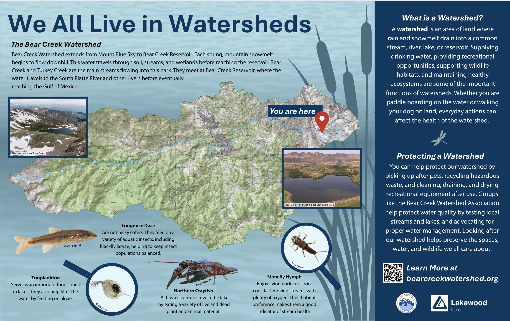
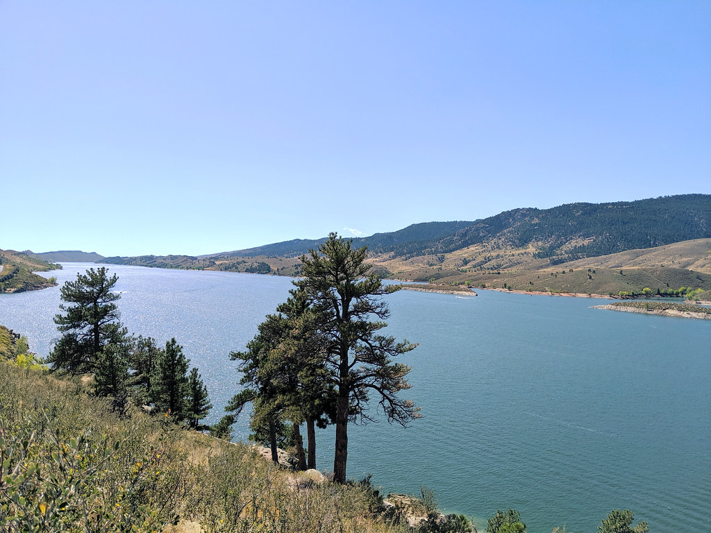
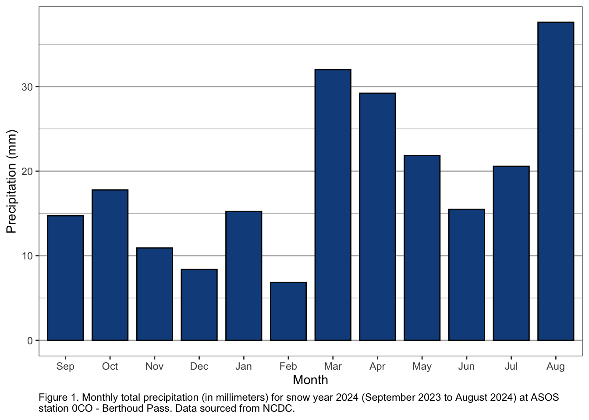

Projects
From Yuck to Yes: What Drives Acceptance of Potable Water Reuse
Growing water scarcity and climate pressures are driving the exploration of alternative drinking-water sources, including potable reuse. Potable reuse offers a reliable and climate-resilient source of water, yet public acceptance presents a major obstacle to widespread adoption. This review synthesizes research on the sensory, physiological, and psychological factors that shape how people evaluate drinking water and relates these concepts to three case studies of reuse programs in Colorado, California, and Singapore. These findings reveal that outreach efforts should consider the presentation of potable reuse water, including its name, the platforms used, and the messengers delivering the information. Strategies should be specific to audiences and use engaging, memorable educational methods. Consistency across treatment plants and an interdisciplinary approach further strengthen public confidence and program success. This review provides a framework for integrating sensory science, psychology, and communication practices to support the development of safe, publicly accepted potable reuse systems.
Bear Creek Lake Park Sign

Research Proposal: Assessing Human Health Risks and Prevalence of De Facto Reuse in Drinking Water
This mock study aims to better understand the impact of de facto water reuse on public health and the environment. De facto reuse occurs when untreated or partially treated wastewater is unintentionally incorporated into drinking water sources. The study has two main objectives: first, to develop tools and models for water utilities to assess the effects of de facto reuse on water quality, and second, to evaluate the potential health risks by comparing water sources impacted by wastewater effluent to less-impacted sources, such as headwaters. The research will examine both pathogens and a range of chemical contaminants, including perfluoroalkyl and polyfluoroalkyl substances (PFA’)s and dibutyl phthalate (DBP’s), which are both classifiable carcinogens. Water samples will be collected from the Colorado River in Colorado and Utah at two sites in addition to natural control sites, and toxicity tests will be conducted using fathead minnows (Pimephales promelas). Statistical analyses will identify significant differences in water quality across sites and seasons. This study will provide important data for risk assessments, improving water quality standards, and shaping policies to manage water resources amid increasing scarcity and climate change. The findings will help create sustainable water reuse strategies, especially in areas affected by climate change, protecting both human and environmental health as water reuse grows. The research will also offer insights into the ecological impacts of de facto reuse, highlighting the need for water management practices that balance human needs with the health of aquatic ecosystems.
Limnology Study of Horsetooth Reservoir in Fort Collins, Co

Snow Hydrology
Data from ASOS station 0CO, Berthoud Pass

Temperature: monthly maximum, average, minimum in degrees C
Precipitation:monthly totals mm

Wind Rose